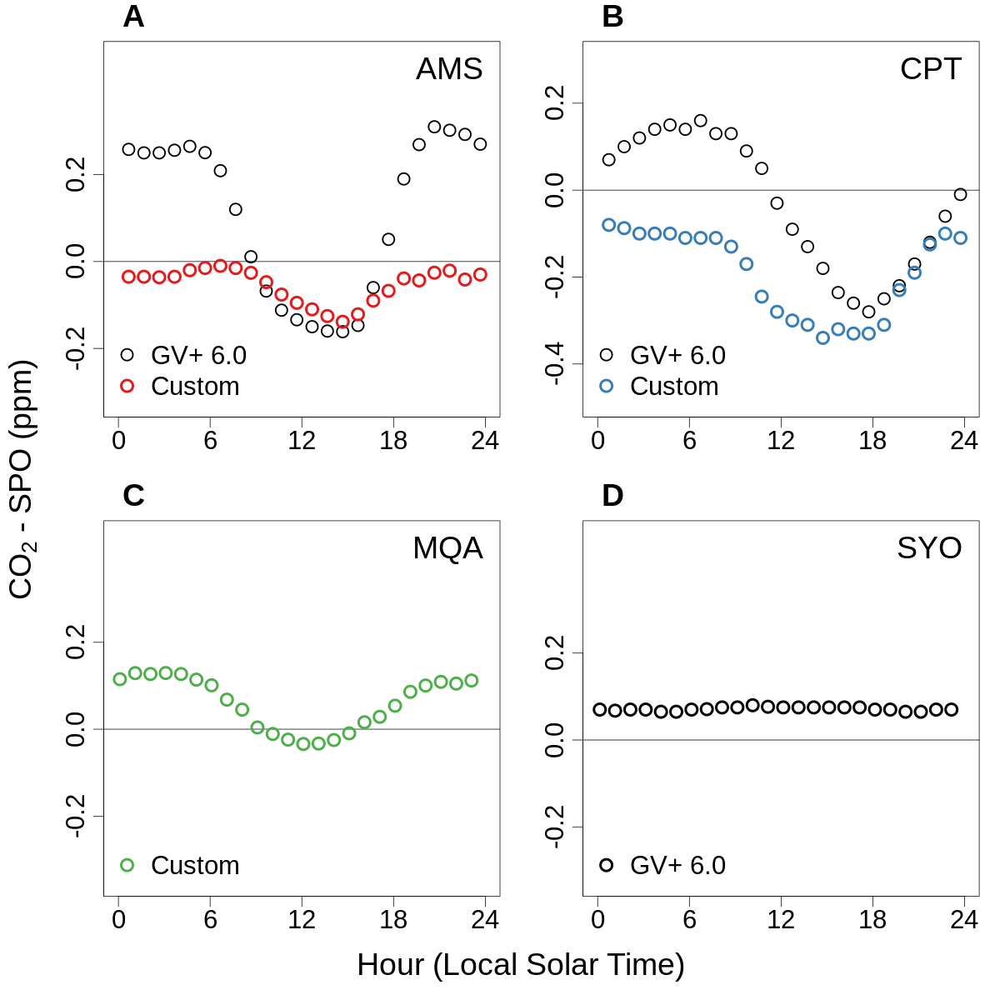

Climatological mean diurnal CO2 cycles since 1999 for four stations with in situ instruments¶
R program
library('ncdf4')
library('yaml')
library('RColorBrewer')
cols = brewer.pal(6, 'Set1')
project_tmpdir_obs = read_yaml('_config_calc.yml')$project_tmpdir_obs
username = Sys.info()['user']
project_tmpdir_obs = gsub('\\{\\{env\\[\'USER\'\\]\\}\\}', username, project_tmpdir_obs)
meanwin = c(1998.8, 2019.2) # window for calculating means, inclusive
flag = '_Custom'
# read in NOAA in situ record from SPO for subtraction
file_in = paste(project_tmpdir_obs, 'obspack_co2_1_GLOBALVIEWplus_v6.0_2020-09-11/data/nc/co2_spo_surface-insitu_1_allvalid.nc', sep = '/')
sponc = nc_open(file_in)
spoco2 = data.frame(cbind(t(ncvar_get(sponc, 'time_components')), ncvar_get(sponc, 'value') * 1E6))
colnames(spoco2) = c('year', 'mon', 'day', 'hour', 'min', 'sec', 'co2')
qcflag = ncvar_get(sponc, 'qcflag')
spoco2$co2[substr(qcflag, 1, 1) != '.'] = NA
spoco2$co2[substr(qcflag, 2, 2) != '.'] = NA
spoco2dt = ISOdatetime(spoco2$year, spoco2$mon, spoco2$day, spoco2$hour, spoco2$min, spoco2$sec, tz = 'UTC')
# set up png
png(paste('figures/Fig-S14-suface-diurnal-cycles', flag, '.png', sep = ''), width = 1200, height = 1200, pointsize = 25)
par(mfrow = c(2, 2))
par(mar = c(3, 3, 2, 1))
par(oma = c(2, 2, 0, 0))
par(mgp = c(2.5, 0.75, 0))
# loop on site
siteno = 0
for(site in c('ams', 'cpt', 'mqa', 'syo')){
print(site)
siteno = siteno + 1
isgvp = NULL # in situ GlobalView+ record
iscust = NULL # in situ custom record
# read in data
if(site == 'ams'){
file_in = paste('obspack_co2_1_GLOBALVIEWplus_v6.0_2020-09-11/data/nc/co2_', site, '_surface-insitu_11_representative.nc', sep = '')
file_in = paste(project_tmpdir_obs, file_in, sep = "/")
is = nc_open(file_in)
isgvp = data.frame(cbind(t(ncvar_get(is, 'time_components')), ncvar_get(is, 'value')*1E6))
colnames(isgvp) = c('year', 'mon', 'day', 'hour', 'min', 'sec', 'co2')
lon = median(ncvar_get(is, 'longitude'))
# for custom, now using GV+ 7.0 with flagging ### use GV+ 6.1 instead? if so, set value_original_scale back to value
file_in = paste('obspack_co2_1_GLOBALVIEWplus_v7.0_2021-08-18/data/nc/co2_', site, '_surface-insitu_11_allvalid.nc', sep = '')
file_in = paste(project_tmpdir_obs, file_in, sep = "/")
is = nc_open(file_in)
iscust = data.frame(cbind(t(ncvar_get(is, 'time_components')), ncvar_get(is, 'value_original_scale')*1E6))
colnames(iscust) = c('year', 'mon', 'day', 'hour', 'min', 'sec', 'co2')
iscust$co2[ncvar_get(is, 'obs_flag') == 0] = NA
} else if(site == 'cpt'){
file_in = paste('obspack_co2_1_GLOBALVIEWplus_v6.0_2020-09-11/data/nc/co2_', site, '_surface-insitu_36_marine.nc', sep = '')
file_in = paste(project_tmpdir_obs, file_in, sep = "/")
is = nc_open(file_in)
isgvp = data.frame(cbind(t(ncvar_get(is, 'time_components')), ncvar_get(is, 'value')*1E6))
colnames(isgvp) = c('year', 'mon', 'day', 'hour', 'min', 'sec', 'co2')
lon = median(ncvar_get(is, 'longitude'))
# for custom, using WDCGG 222Rn to filter (WDCGG CO2 is on X2019 so still using ObsPack for CO2)
# filter for 222Rn < 150
file_in = 'WDCGG/nc/222rn/hourly/222rn_cpt_surface-insitu_7_9999-9999_hourly.nc'
file_in = paste(project_tmpdir_obs, file_in, sep = "/")
rn = nc_open(file_in)
rncust = data.frame(cbind(t(ncvar_get(rn, 'start_time_components')), ncvar_get(rn, 'value')))
colnames(rncust) = c('year', 'mon', 'day', 'hour', 'min', 'sec', 'rn')
iscust = merge(isgvp, rncust, by = c('year', 'mon', 'day', 'hour', 'min', 'sec'), all = F)
iscust$co2[iscust$rn>150] = NA
iscust$co2[is.na(iscust$rn)] = NA
} else if(site == 'mqa'){
# for custom, now using WDCGG
file_in = 'WDCGG/nc/co2/hourly/co2_mqa_surface-insitu_16_9999-9999_hourly.nc'
file_in = paste(project_tmpdir_obs, file_in, sep = "/")
is = nc_open(file_in)
iscust = data.frame(cbind(t(ncvar_get(is, 'start_time_components')), ncvar_get(is, 'value')))
colnames(iscust) = c('year', 'mon', 'day', 'hour', 'min', 'sec', 'co2')
iscust$co2[ncvar_get(is, 'QCflag') != 1] = NA
lon = median(ncvar_get(is, 'longitude'), na.rm=T)
} else if(site == 'syo'){
file_in = 'obspack_co2_1_GLOBALVIEWplus_v6.0_2020-09-11/data/nc/co2_syo_surface-insitu_8_allvalid.nc'
file_in = paste(project_tmpdir_obs, file_in, sep = "/")
is = nc_open(file_in)
isgvp = data.frame(cbind(t(ncvar_get(is, 'time_components')), ncvar_get(is, 'value')*1E6))
colnames(isgvp) = c('year', 'mon', 'day', 'hour', 'min', 'sec', 'co2')
lon = median(ncvar_get(is, 'longitude'))
}
# trim for 1999-present
if(!is.null(isgvp)){
decdate = isgvp$year + (isgvp$mon - 0.5) / 12
isgvp = isgvp[decdate>= meanwin[1]&decdate<meanwin[2], ]
}
if(!is.null(iscust)){
decdate = iscust$year + (iscust$mon - 0.5) / 12
iscust = iscust[decdate>= meanwin[1]&decdate<meanwin[2], ]
}
ylm = NULL
yspan = 0.8
xlm = c(0, 24)
localnoon = -lon/360*24 + 12
# subtract off SPO, calculate mean diurnal cycle, and shift to local time
if(!is.null(isgvp)){
isgvpdt = ISOdatetime(isgvp$year, isgvp$mon, isgvp$day, isgvp$hour, isgvp$min, isgvp$sec, tz = 'UTC')
isgvp$mmint = approx(as.POSIXct(spoco2dt), spoco2$co2, as.POSIXct(isgvpdt), rule = 2)$y # interpolate spo monthly means to times of obs
isgvp$anom = isgvp$co2-isgvp$mmint
diur = aggregate(isgvp$anom, by = list(hour = isgvp$hour), median, na.rm = T)
diur$hour = diur$hour + 0.5
diur$lst = diur$hour-localnoon + 12
diur$lst[diur$lst>24] = diur$lst[diur$lst>24] - 24; diur$lst[diur$lst<0] = diur$lst[diur$lst<0] + 24
diur = diur[order(diur$lst), ] # 'solar' local standard time
ylm = (max(diur$x) + min(diur$x))/2 + c(-0.5, 0.5)*yspan
} # if(!is.null(isgvp))
if(!is.null(iscust)){
iscustdt = ISOdatetime(iscust$year, iscust$mon, iscust$day, iscust$hour, iscust$min, iscust$sec, tz = 'UTC')
iscust$mmint = approx(as.POSIXct(spoco2dt), spoco2$co2, as.POSIXct(iscustdt), rule = 2)$y # interpolate spo monthly means to times of obs
iscust$anom = iscust$co2-iscust$mmint
diurcust = aggregate(iscust$anom, by = list(hour = iscust$hour), median, na.rm = T)
diurcust$hour = diurcust$hour + 0.5; diurcust$lst = diurcust$hour-localnoon + 12
diurcust$lst[diurcust$lst>24] = diurcust$lst[diurcust$lst>24]-24; diurcust$lst[diurcust$lst<0] = diurcust$lst[diurcust$lst<0] + 24
diurcust = diurcust[order(diurcust$lst), ] # 'solar' local standard time
if(is.null(ylm)){
ylm = (max(diurcust$x) + min(diurcust$x))/2 + c(-0.5, 0.5)*yspan
} else {
ylm = (max(c(diurcust$x, diur$x)) + min(c(diurcust$x, diur$x)))/2 + c(-0.5, 0.5)*yspan
}
}
# plot
plot(c(1:3), c(1:3), type = 'n', xlab = '', ylab = '', cex.main = 1.5, cex.lab = 1.5, cex.axis = 1.5, xlim = xlm, ylim = ylm, axes = F) # blank plot
abline(h = 0)
box()
axis(1, at = seq(0, 24, 6), cex.axis = 1.5, cex.lab = 1.5)
axis(2, at = seq(-0.4, 0.2, 0.2), cex.axis = 1.5, cex.lab = 1.5)
if(!is.null(isgvp)){
if(site!= 'syo'){
points(diur$lst, diur$x, cex = 1.5, lwd = 2.5, col = 'black')
} else {
points(diur$lst, diur$x, cex = 1.5, lwd = 4, col = 'black')
}
print(paste('GV+ mean', round(mean(diur$x), 2)))
}
if(!is.null(iscust)){
points(diurcust$lst, diurcust$x, cex = 1.5, lwd = 4, col = cols[siteno])
print(paste('Custom mean', round(mean(diurcust$x), 2)))
}
if(site == 'syo'){ ptlwd = 4 } else { ptlwd = 2.5 }
sel = c(!is.null(isgvp), !is.null(iscust))
legend('bottomleft', c('GV+ 6.0', 'Custom')[sel], col = c('black', cols[siteno])[sel], pt.lwd = c(ptlwd, 4)[sel], pch = 1, cex = 1.5, bty = 'n')
mtext(c('A', 'B', 'C', 'D')[siteno], 3, adj = 0.05, line = 0.5, cex = 1.5, font = 2)
mtext(toupper(site), 3, adj = 0.95, line = -2, cex = 1.5)
} # loop on site
mtext(expression(paste(CO[2], ' - SPO (ppm)')), 2, 0, outer = T, cex = 1.5)
mtext('Hour (Local Solar Time)', 1, 0, outer = T, cex = 1.5)
dev.off()
[1] "ams"
[1] "GV+ mean 0.11"
[1] "Custom mean -0.05"
[1] "cpt"
[1] "GV+ mean -0.03"
[1] "Custom mean -0.19"
[1] "mqa"
[1] "Custom mean 0.06"
[1] "syo"
[1] "GV+ mean 0.07"
 “Climatological mean diurnal CO2 cycles since 1999 for four stations with in situ instruments. (A) Amsterdam Island (AMS), (B) Cape Point (CPT), (C) MacQuarie Island (MQA), and (D) Syowa Station (SYO). Plotted values are binned hourly-mean values with the NOAA in situ SPO record subtracted. The black points in panels A, B, and D were calculated from the GV+ version 6.0 ObsPack product with the provided baseline flags applied. The colored points in panels A, B, and C were calculated using custom files that excluded data with large terrestrial influence from the data providers rather than ObsPack. In the case of AMS, the custom file included intended filtering for wind direction and variability, not included in the ObsPack GV+ version 6.0 file. This filtering information has subsequently been added in ObsPack GV+ version 6.1. In the case of CPT, the custom file included additional filtering using 222Rn not included in the ObsPack file. MQA in situ data are not included in ObsPack, but have subsequently been provided to WDCGG. We show SYO here as an example of a coastal site with no local vegetation.”